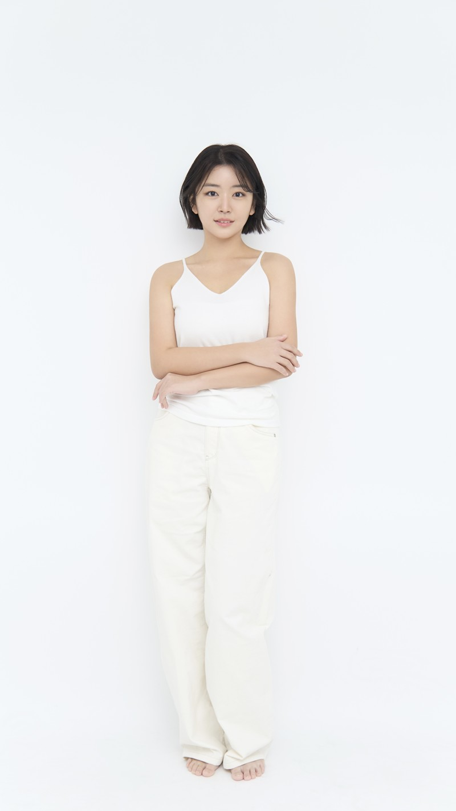

서경대학교 공연예술학과 뮤지컬 연기전공 합격 (실기,면접) (24:1) ‘21
한세대학교 공연예술학과 합격 (33:1)
동아방송예술대학교 뮤지컬과 합격 (23:1)
서경대학교 뮤지컬학과 입시 진행 : 400명 앞 입시 설명 및 질의응답 ‘22
제28회 경기도 연극제 본선 진출작 <블랙아웃> 연출 및 소개 ’19
극단 심인 홍보 (PT) '22
어린이 뮤지컬 워크숍 출강 ‘23-’24
결혼식 축사 및 축가 다수 '21-‘22
[ Musical ]
2025 '영웅'
[ Play / Screen ]
2024 '스며들다'
2022 넷플릭스 ‘테이크원_AKMU’
*개인, 그룹 연기 및 스피치 레슨 다수 (아역, 고등학생, 대학생 등) '21~